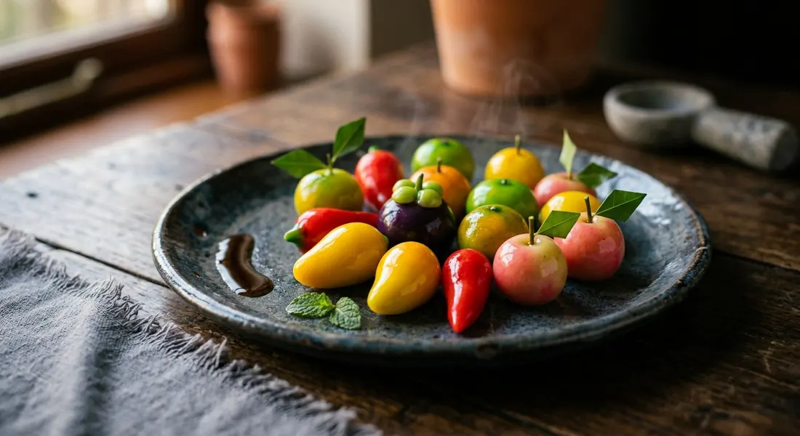

Mung bean paste cooked with coconut milk, shaped into miniature fruit no bigger than a thumbnail, painted by hand and dipped in agar jelly until each piece wears a glassy shell — Portuguese marzipan remade in the Ayutthaya palace kitchen.

The name is the method: ลูก (look) is a small round piece, and ชุบ (chup) means to dip or coat — each shaped sweet is dipped, over and over, into clear agar jelly until it sets in a glassy shell. What is inside that shell is the dish's whole history.
Look chup descends from massapão, the almond marzipan Portuguese traders brought to Siam in the 1600s. In the court of King Narai, the royal kitchen under Maria Guyomar de Pinha — the Portuguese-Japanese cook credited with refining it — swapped almonds, which had to be imported, for the mung bean the country grew everywhere. Almonds became ถั่วเขียว (mung beans), marzipan became look chup, and a European confection turned into one of the most recognisably Thai sweets there is.
It is still a sweet of occasions. The painting is the labour: each miniature mango, chilli, mangosteen and aubergine is coloured by hand with a fine brush, dried, and dipped in the warm agar — Wongnai notes the finished sweets command high prices precisely because the method looks easy and the handwork is not. Made for weddings, ordinations and temple fairs, look chup is the Thai kitchen showing off.
| Thai | English | Amount |
|---|---|---|
| ถั่วเขียวเลาะเปลือก | Hulled split mung beans | 250 g |
| กะทิ | Coconut milk | 250 ml |
| น้ำตาลทราย | Caster sugar | 200 g |
| สีผสมอาหาร | Food colouring (orange, red, green, yellow) | as needed |
| ผงวุ้น | Agar-agar powder | 3 tbsp |
| น้ำเปล่า | Water (for the jelly) | 650 ml |
| น้ำตาลทราย | Caster sugar (for the jelly) | 60 g |
| กลิ่นมะลิ | Jasmine essence | 1-2 drops |
The Kapook pot: 500 g steamed mung beans, 250 g sugar, 250 ml coconut milk and ¼ tsp salt, kneaded and rolled into 10 g balls, dipped in agar up to four times. The Wongnai pot (cherries): 2 cups steamed mung beans, ¾ cup sugar, 1 cup coconut milk and ½ tsp salt; 3 tsp agar and ¼ cup sugar in 2 cups of water, dipped in two or three coats. The TrueID pot: 125 g mung beans with 150 g coconut milk, 125 g sugar and 5 g glutinous rice flour worked into the paste, agar at 10 g to 440 ml of water. All of them, from the first washing of the beans to the last dip, are the same sweet.
Boil or steam. Aroifin boils the mung beans in water until soft. Kapook and Wongnai soak the beans for several hours and steam them — Wongnai specifies a vigorous steam for 20-30 minutes. The disagreement is minor, but it changes the texture going into the pan: steamed beans absorb less water, so the paste dries out faster when you stir it.
How many dips. Two (Aroifin), three (Wongnai), four (Kapook). The more coats, the thicker and shinier the shell — and the longer each piece takes. Everyone agrees on the rule behind the number: dip, let the coat set, dip again. One thick coat is never the answer.
Flour in the paste. Most recipes keep the paste to beans, coconut milk and sugar. TrueID's star-shaped version works 5 g of glutinous rice flour into every 125 g of beans, and its mixed-fruit version uses a spoon of tapioca starch — a stiffer paste that holds sharper edges. The classic paste has neither, and Kapook's four-coat version is flourless.
The salt. Wongnai salts the paste (½ tsp), Kapook a pinch (¼ tsp), TrueID the same pinch. Aroifin salts not at all. It is a quiet seasoning that sharpens the sweetness of the beans, and recipes that omit it read a touch flatter.
The sugar. Aroifin uses 200 g to 250 g of beans; Kapook uses half that, 250 g to 500 g — a noticeably less sweet paste. Wongnai sits between. Taste as you stir; the paste should be sweet enough to carry the bean, not jam-sweet.
This recipe is translated from the following Thai-language sources. Where they disagree, we've said so.
1. Aroifin — "วิธีทำ ลูกชุบ ขนมไทยรูปผักผลไม้ สูตรหวานอร่อย สีสันน่าทาน" (the recipe used here; boiling method, two dips) — aroifin.com
2. Kapook Cooking — "ลูกชุบ วิธีทำขนมไทยรูปผัก-ผลไม้ฟรุ้งฟริ้งน่ารัก" (recipe by Pantip member sujitrar; steamed beans, four dips) — cooking.kapook.com
3. Wongnai — "วิธีทำ 'ลูกชุบ' เชอร์รี เมนูขนมไทยโบราณสีสันสดใส" by poppy farm (steamed beans, two to three coats) — wongnai.com
4. TrueID Food — "สูตรทำ ลูกชุบ 10 แบบ สูตรขนมไทย เมนูสร้างอาชีพ" by Maysylvie (ten variations incl. the glutinous-rice-flour paste) — food.trueid.net